Für jedes Alter das passende Abenteuer
Unsere Stufen
Drei Stufen, ein gemeinsamer Weg — und für jede Stufe ein eigenes Leitungsteam, das euer Kind begleitet.
Wölflistufe
6 – 9 JahreDie Wölflinge sind die jüngste Stufe der Pfadi. Kinder in diesem Alter erleben gemeinsam Abenteuer in der Natur, spielen, basteln und lernen erste Fähigkeiten wie Knoten binden oder sich im Wald orientieren. Im Mittelpunkt steht das Gemeinschaftsgefühl: füreinander da sein und Neues ausprobieren. Die Aktivitäten sind altersgerecht und finden meistens draussen statt.
Zum Programm der WölflistufeUnsere Leitenden
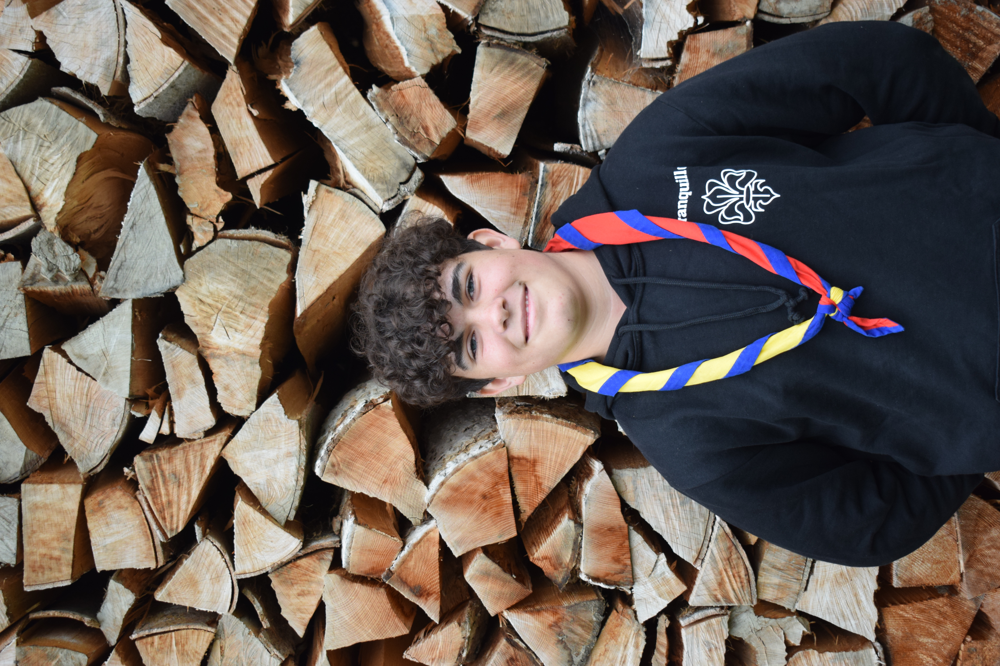
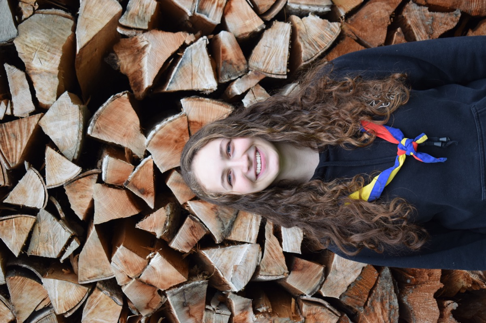
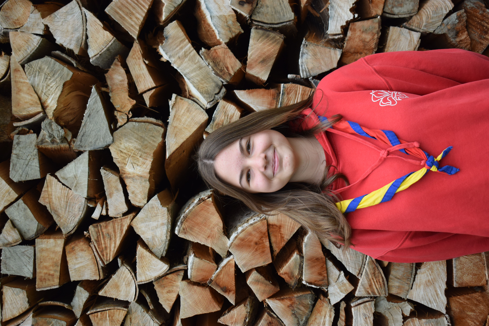
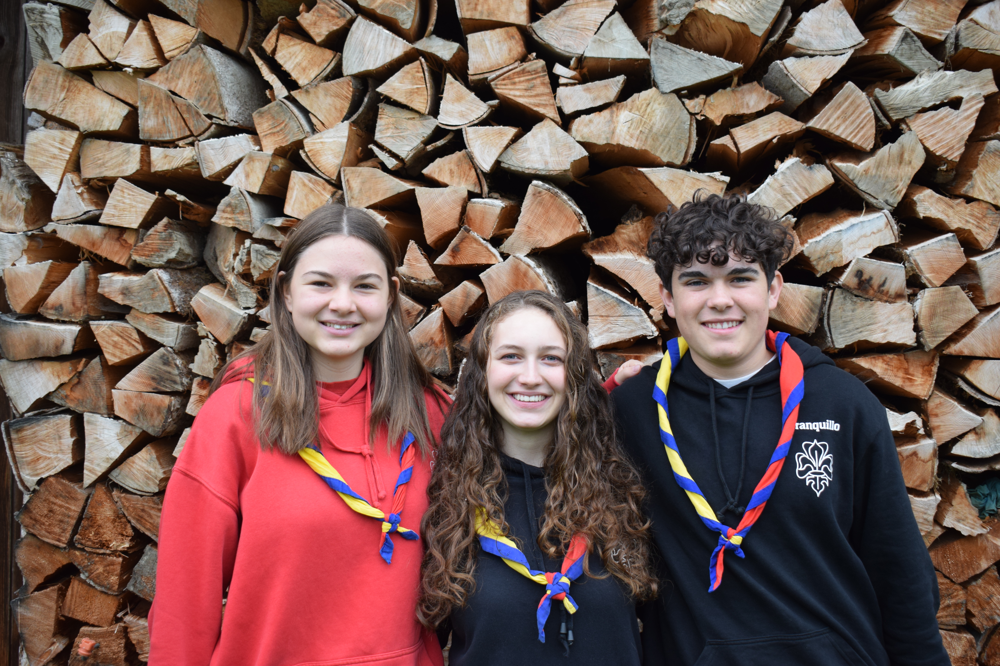
Pfadistufe
10 – 13 JahreIn der Pfadistufe erwartet die Jugendlichen ein abwechslungsreiches und spannendes Programm. Sie lernen wichtige Pfaditechniken wie Knoten binden, Zelte aufbauen, Feuer machen und sich in der Natur zurechtzufinden. Gemeinsam erleben sie Abenteuer, meistern Herausforderungen im Team und sammeln viele unvergessliche Erfahrungen. Mit zunehmendem Alter werden die Aktivitäten anspruchsvoller und bieten mehr Möglichkeiten, Neues auszuprobieren. Ein besonderes Highlight ist das Sommerlager, das ganze zwei Wochen dauert und für viele zu den schönsten Erlebnissen ihrer Pfadizeit gehört.
Zum Programm der PfadistufeUnsere Leitenden
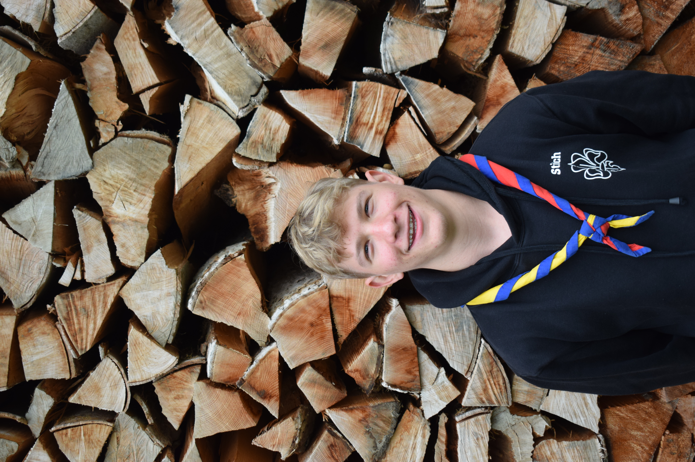
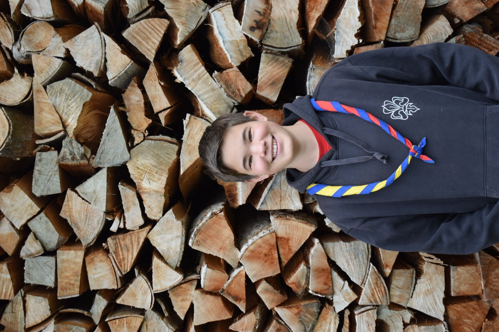
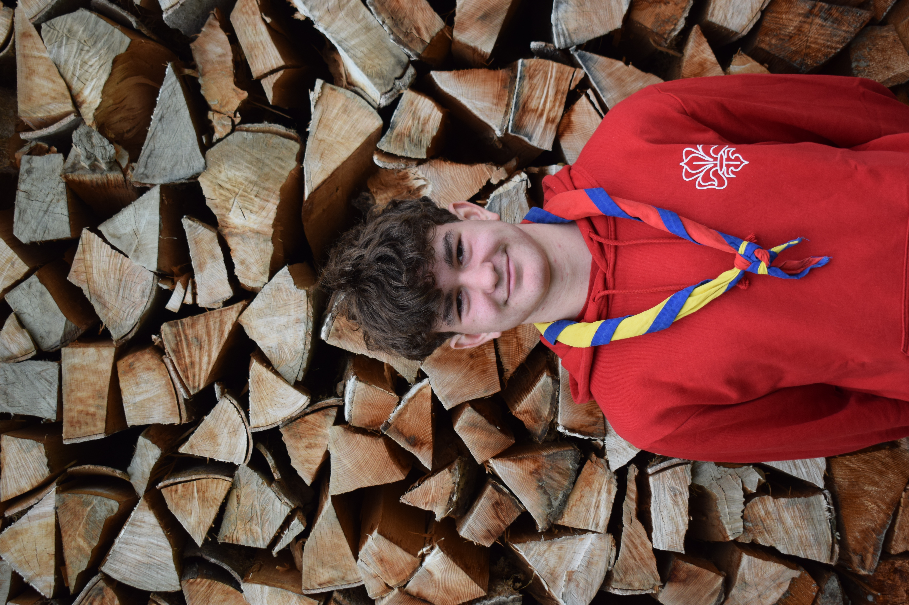
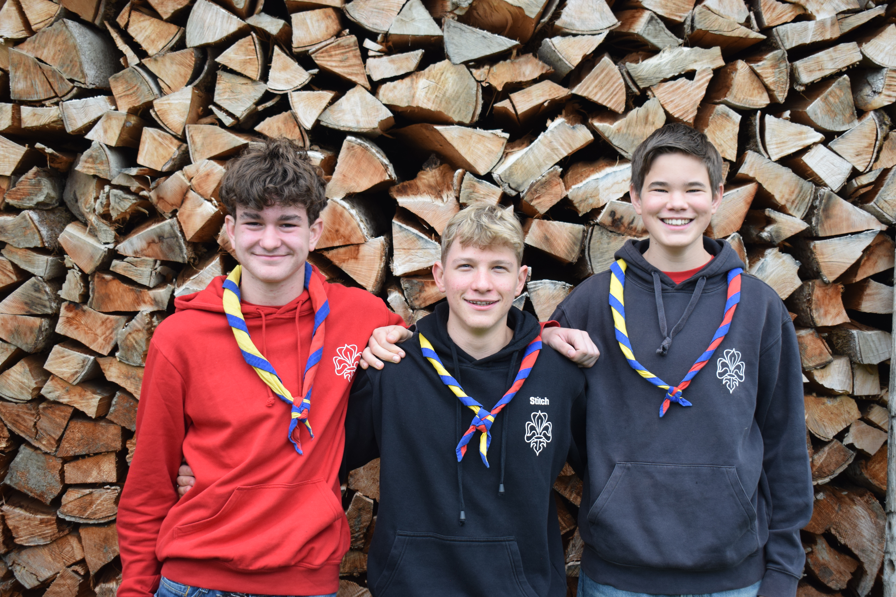
Piostufe
14 – 16 JahreDie Piostufe richtet sich an ältere Jugendliche, die bereit sind, grössere Verantwortung zu tragen. Pios organisieren eigenständig anspruchsvolle Projekte und Lager, oft mit einem gesellschaftlichen Schwerpunkt. Sie setzen sich mit Werten, Gemeinschaft und ihrem Platz in der Gesellschaft auseinander. Die Pio-Zeit ist die Phase, in der aus Teilnehmenden Gestalterinnen und Gestalter werden.
Zum Programm der PiostufeUnsere Leitenden
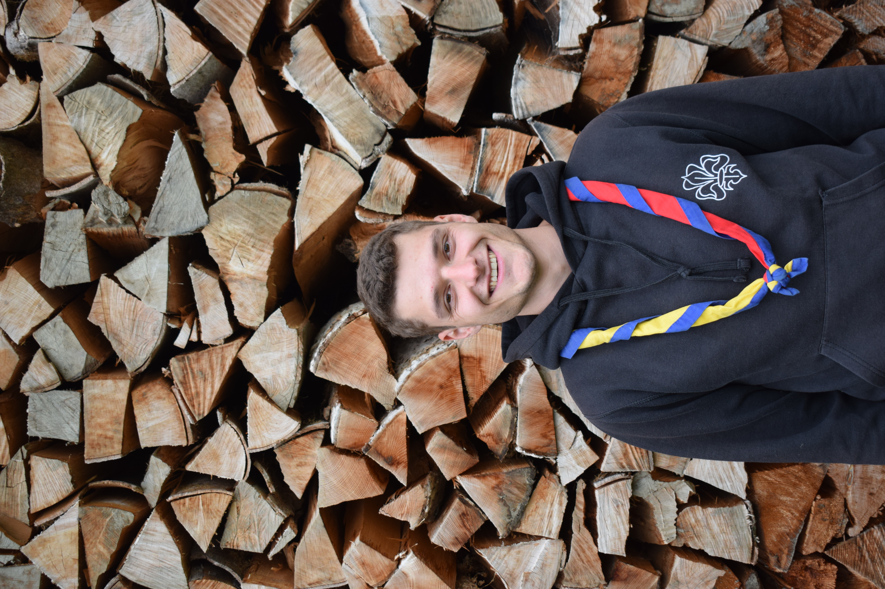
Organigramm 2026
Abteilungsstruktur mit allen Leitenden und Mitgliedern
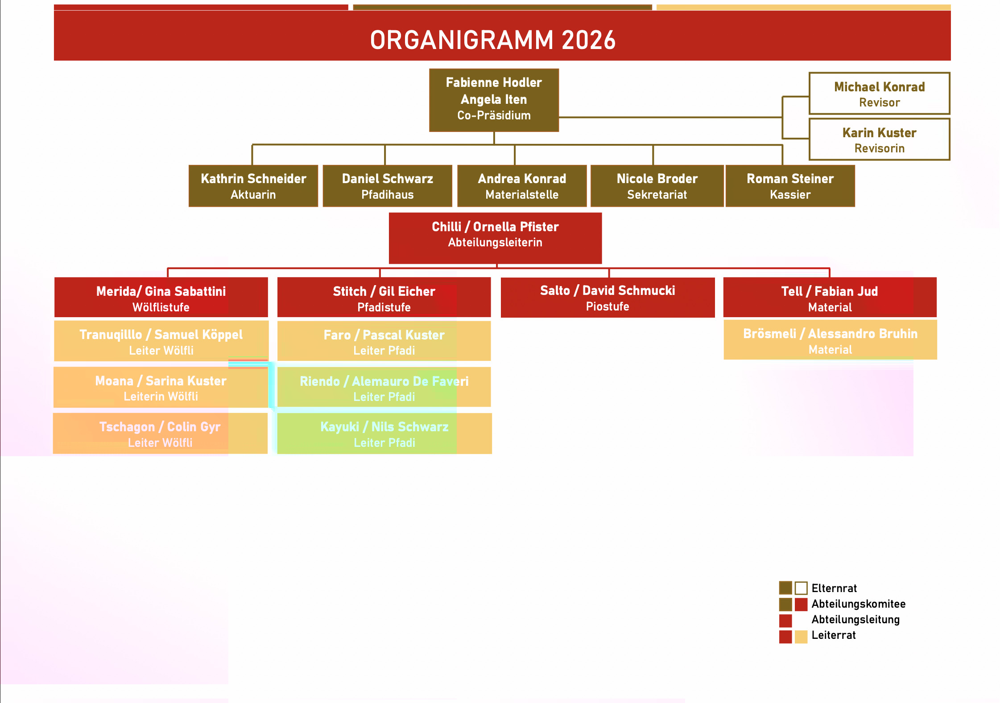
Stufenmodell
Das Pfadi-Stufenmodell — Altersgruppen und Inhalte im Überblick
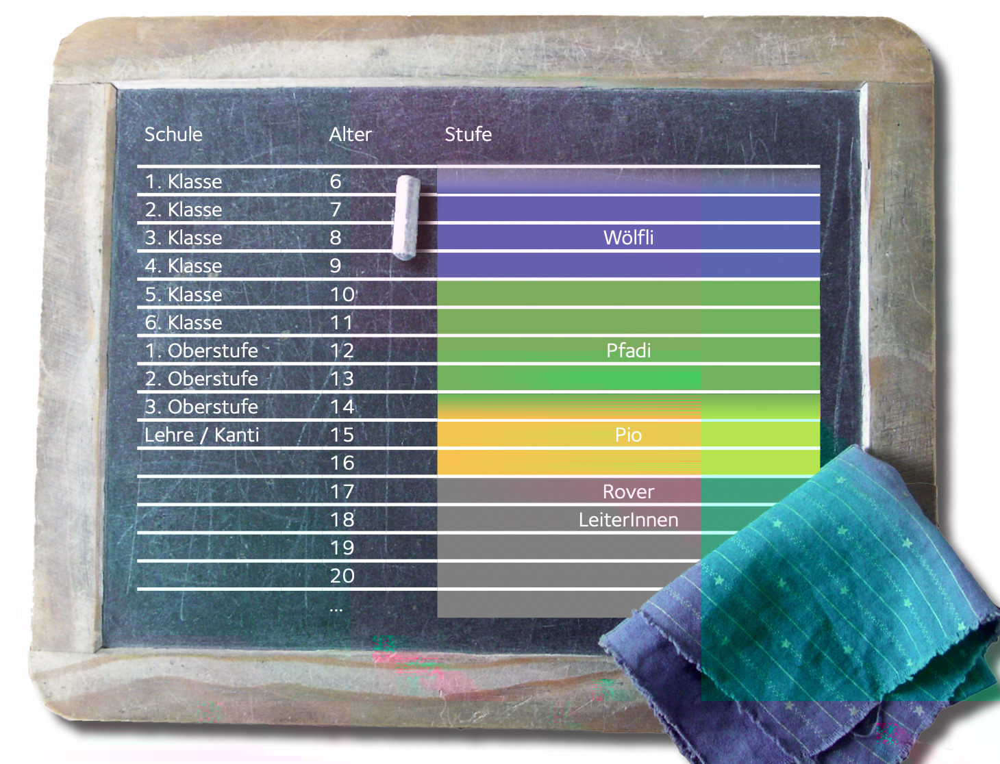